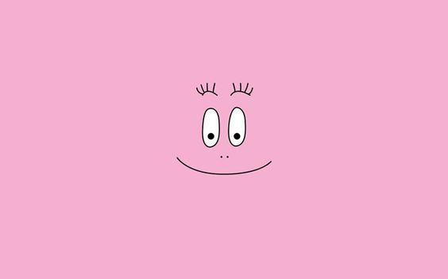
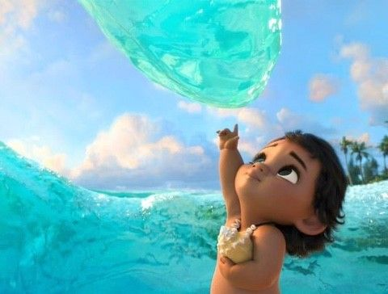
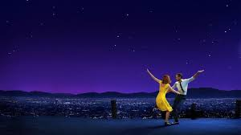
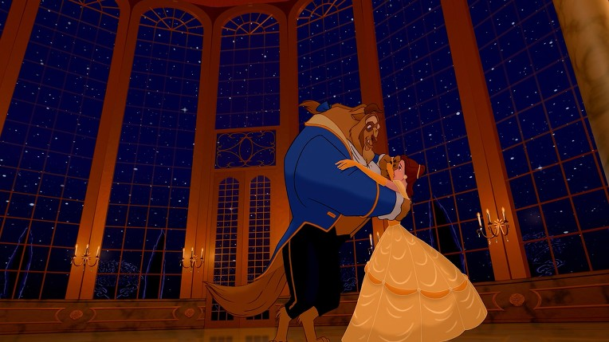

Youtube
#yuri
#my video
#펭귄
펭귄의 지구대모험 | 1학년 3반 전유리 수행평가 (미림정보과학고등학교)
1M views 1 month ago
1k
0
Share
Save
Report

Yuri
구독자 2.3만명
구독중
Up next

So-Hyang - 디즈니 모아나-“How Far I’ll Go”(언젠가 떠날거야)
DisneyMusicAsiaVEVO
조회수 1462만회

라라랜드 OST - Another Day of Sun (가사 해석)
Pops Lee [팝스리]
조회수 2.7만회

[미녀와 야수] '벨' 첫 등장 무삭제 오프닝 영상
월트디즈니
조회수 211만회